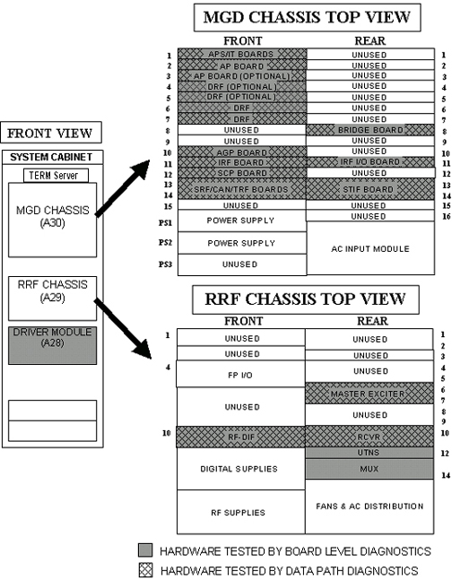

- 00000018WIA30A23E20GYZ
- id_131076453.0
- Aug 29, 2019 1:38:38 AM
Hardware Tested During Diagnostics
The HTML-based diags consist of board level and data path tests and functional checks. This procedure explains how to start the tests and functional checks and where error messages are logged. It also provides test descriptions. This procedure applies to 1.5T MR systems with a Multi-Generational DAQ (MGD) Chassis.
Do not start multiple copies of diagnostics. Multiple copies of diagnostics can cause different anomalies such as locked-up diagnostic windows.
Diagnostics (disk-based tests) check components in the System Cabinet and many of the peripheral hardware connected to those components. The diagnostics generally fit into one of three categories; Board Level, Data Path, and Function Checks. Board Level Diagnostics check selected functions on a board. Data Path Diagnostics, as the name implies, generally checks the communication path(s) from one board or module to another. Functional Checks don’t automatically diagnose a failure but generally provide an output or status change that the FE can detect. This helps the FE gauge the functionality of the hardware. Refer to Table 1 for a list of tested boards and peripheral hardware and how each can be tested. See Figure 1 for the location of tested boards located in the System Cabinet.
| Board Level Diagnostics | Data Path Diagnostics | Functional Checks |
| MGD | MGD | SRI |
| RRF | CAN | WIM |
| Driver Module | SRI | ACGD (GIP) |
| CAN | WIM | MGD |
| SSM | RRF | |
| ACGD | ACGD | |
| TERM Server | Coil ID | |
| Shim Supply | Shim Supply | Shim Supply |
| UPM | UPM |
